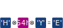
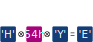

Secure Update of IoT Devices
over Low Data Rate Wireless Networks
Jürgen Fitschen - SSV Software Systems GmbH
What we'll cover ...
Why do we need updates for IoT devices?
Requirements for secure updates.
Implementations currently available to RIOT users.
Challenges to face for devices connected using low data rate networks.
Solutions to those challenges.
Why do we need updates for IoT devices?
Fixing vulnerabilities and bugs
Adding and improving features of IoT applications
Adjust on-device configurations and AI models
Requirements for Secure Updates
Atomic Transactions: Immune to power and network loss mid-update
Ensure Integrity: Immune to corruption due to
manipulation or transmission errors
Ensure Purpose: Update is intended for the device
Prevent Replay: Immune to downgrades to older versions
Implementations Currently Available to RIOT Users
RIOTBOOT[1]: The Small and Powerful Bootloader
typedef struct {
uint32_t magic_number; /* Always "RIOT" -> 0x544f4952 */
uint32_t version; /* Slot's version number */
uint32_t start_addr; /* E.g. Slot0: CPU_FLASH_BASE + RIOTBOOT_LEN + RIOTBOOT_HDR_LEN */
uint32_t chksum; /* Checksum from magic_number to start_addr */
} riotboot_hdr_t;
Bootloader algorithm:
uint32_t highest_seen_version = 0;
int slot_to_boot = -1;
for (unsigned i = 0; i < riotboot_slot_numof; i++) {
const riotboot_hdr_t *header = riotboot_slot_get_hdr(i);
/* Check magic */
if (header->magic_number != 0x544f4952) continue;
/* Check checksum */
if (riotboot_hdr_checksum(header) != header->chksum) continue;
/* Highest seen version? */
if (slot_to_boot == -1 || header->version > highest_seen_version) {
highest_seen_version = header->version;
slot_to_boot = i;
}
}
riotboot_slot_jump(slot_to_boot);
RIOTBOOT[1]: The Small and Powerful Bootloader
int install_update(int target_slot, const uint8_t *new_data, size_t new_data_len,
const uint8_t new_data_hash[SHA256_DIGEST_LENGTH]) {
riotboot_flashwrite_t state;
/* Prepare context and erase first page -> RIOTBOOT magic gets destroyed */
riotboot_flashwrite_init(&state, target_slot);
/* Write image to slot omitting the magic (i.e. first 4 bytes) */
riotboot_flashwrite_putbytes(&state, new_data + 4, new_data_len - 4, false);
/* Check written image against provided hash. It will take care of the omitted magic. */
if (riotboot_flashwrite_verify_sha256(new_data_hash, new_data_len, target_slot) != 0) {
/* Image is not valid! */
return RC_INVALID_HASH;
}
/* Enable slot by writing the magic */
riotboot_flashwrite_finish(&state);
/* Start the written image by rebooting */
pm_reboot();
return RC_SUCCESS;
}
RIOTBOOT[1]: The Small and Powerful Bootloader
Atomic Transactions: Writing the magic is the last step
and enables the slot.
Ensure Integrity: Checking against a cryptographic hash.
But: The hash must be transferred securely!
Ensure Purpose: Magic ensures the image to be a RIOTBOOT image.
But: The image may be compiled for another device!
Prevent Replay: The bootloader always starts the image
with the highest version.
SUIT[2,3]: Software Updates for Internet of Things
SUIT[2,3]: Software Updates for Internet of Things
Atomic Transactions: Writing the magic is the last step
and enables the slot.
Ensure Integrity: Asymmetric keys and digital signature protect information from the developer to the IoT device.
Ensure Purpose: The Manifest defines the image's purpose precisely.
Prevent Replay: SUIT checks the Manifest's version field.
Optimizations for Low Data Rate Wireless Networks with High Density of IoT Devices
Why do we need optimizations?
SUIT uses unicast CoAP. Every device downloads updates individually.
RF Network: IEEE802.15.4 - 868.3MHz
Data rate[4] $DR = 200 \frac{\text{kBit}}{\text{s}}$
Duty cycle[5] $DC = 1\text{%}$
$DR_{eff} = DR \cdot DC = 2 \frac{\text{kBit}}{\text{s}}$
Protocol overhead $OH = 25\text{%}$
Update:
File size $L = 128 \text{kByte} = 1 \text{MBit}$
$L_{eff} = L \cdot (1+OH) = 1.25 \text{MBit}$
Transmission of 1 update:
$t_1 = \frac{L_{eff}}{DR_{eff}} = 625 \text{s} = 10.4 \text{min}$
Transmission of 24 updates:
$t_{24} = 24 \cdot t_1 = 4.17 \text{h}$
How to optimize?
- Sync all devices to be awake at the same time.
- Transfer the update once using multicast.
- If a device missed a chunk:
Request it using unicast.
Update time can be reduced drastically!
Introduce redundancy to reduce retransmissions
 

If only 1 of the 4 blocks is missing, it can be reconstructed!
Introduce redundancy to reduce retransmissions

Interleaving converts burst errors to random errors
and improves XOR erasure coding.
Current state of multicast updates in RIOT
Already in production but without SUIT integration.
Example code will be released during the next days:
https://github.com/ssv-embedded/RIOTSummit2021
Optimizations for Very Low Data Rate
Wireless Networks like LoRaWAN
Why do we need optimizations?
RF Network:
LoRa: EU863 · SF8 · 250kHz Bandwidth
The Things Network · Fair Use Policy[6]: $10 \frac{\text{msg}}{\text{day}}$
Max payload size (excl. overhead): ~$200 \frac{\text{Byte}}{\text{msg}}$
$DR_{eff} = 10 \frac{\text{msg}}{\text{day}} \cdot 200 \frac{\text{Byte}}{\text{msg}} = 2000 \frac{\text{Byte}}{\text{day}}$
Update:
Filesize $L = 128 \text{kByte}$
Transmission of 1 update:
$t_1 = \frac{L}{DR_{eff}} = 64 \text{days}$
Remove redundancy!
Small modification to the gnrc_lorawan example:
diff --git a/examples/gnrc_lorawan/main.c b/examples/gnrc_lorawan/main.c
index 0308de4bda..9d5bf3af46 100644
--- a/examples/gnrc_lorawan/main.c
+++ b/examples/gnrc_lorawan/main.c
@@ -38,7 +38,7 @@
int main(void)
{
/* start the shell */
- puts("Initialization successful - starting the shell now");
+ puts("Initialization successful - connecting to the net!");
Remove redundancy!
Leads to a binary with the same size and small modifications inside the binary:
| File | Size |
|---|---|
| gnrc_lorawan_a.bin | 55344B |
| gnrc_lorawan_b.bin | 55344B |
--- gnrc_lorawan_a.asm
+++ gnrc_lorawan_b.asm
@@ -21404,12 +21404,12 @@
ada8: 75 63 63 65 .word 0x65636375
adac: 73 73 66 75 .word 0x75667373
adb0: 6c 20 2d 20 .word 0x202d206c
- adb4: 73 74 61 72 .word 0x72617473
- adb8: 74 69 6e 67 .word 0x676e6974
- adbc: 20 74 68 65 .word 0x65687420
- adc0: 20 73 68 65 .word 0x65687320
- adc4: 6c 6c 20 6e .word 0x6e206c6c
- adc8: 6f 77 .short 0x776f
+ adb4: 63 6f 6e 6e .word 0x6e6e6f63
+ adb8: 65 63 74 69 .word 0x69746365
+ adbc: 6e 67 20 74 .word 0x7420676e
+ adc0: 6f 20 74 68 .word 0x6874206f
+ adc4: 65 20 6e 65 .word 0x656e2065
+ adc8: 74 21 .short 0x2174
adca: 00 .byte 0x00
The VCDIFF standard[7] creates binary diffs
$ vcdiff encode -interleaved -dictionary gnrc_lorawan_a.bin -target gnrc_lorawan_b.bin >a-b.vcdiff
$ ls -l
total 140
-rw-r--r-- 1 jue jue 53 8. Sep 15:14 a-b.vcdiff
-rw-r--r-- 1 jue jue 55344 8. Sep 15:13 gnrc_lorawan_a.bin
-rw-r--r-- 1 jue jue 55344 8. Sep 15:13 gnrc_lorawan_b.bin
$ vcdiff-decode -i gnrc_lorawan_a.bin <a-b.vcdiff >gnrc_lorawan_b-reconstructed.bin
WIN VCD_SOURCE [0x0+55344] => [0x0+55344]
COPY from SEGMENT [0x0+44468] => [0x0+44468]
ADD => [0xadb4+22]
COPY from SEGMENT [0xadca+10854] => [0xadca+10854]
$ md5sum gnrc_lorawan_b*
7ae6a0dcacbc616ed19ad74430333eef gnrc_lorawan_b-reconstructed.bin
7ae6a0dcacbc616ed19ad74430333eef gnrc_lorawan_b.bin
Encoding: google/open-vcdiff
Decoding: jue89/tiny-vcdiff
The VCDIFF standard[7] creates binary diffs
More use cases:
| Use Case | Old Bin Size | New Bin Size | Diff Size | Compression | Download Time |
|---|---|---|---|---|---|
| Changing constant value | 55344B | 55344B | 53B | 99.9% | < 1hour |
| Changing small code section | 55344B | 55316B | 2810B | 94.9% | 1.4 days |
| Update from 2021.04 to 2021.07 | 56056B | 55344B | 17374B | 68.6% | 8.7 days |
Still not fast, but OTA updates become achievable!
Current state of binary diff-based updates
SSV is utilizing VCDIFF in non-RIOT environments:
Updates of Linux filesystem images at compression ratios better than 99.5%.
The decoder implementation is compatible with the RIOT/pkg. A PR bringing the decoder to the RIOT is already prepared. Stay tuned!
A novel approach with a lot to be discovered!
Your Takeaways
RIOTBOOT is a great foundation for implementing OTA updates.
SUIT might be a good fit if network bandwidth is plentiful.
Multicast updates reduce OTA update duration in high-density environments.
VCDIFF can be the door-opener for OTA updates over LoRaWAN.
References
- RIOTBOOT Documentation
- SUIT: IETF Working Group Documents
- SUIT: RIOT Impementation
- IEEE 802.15.4-2020 Standard
- ETSI EN 300 220-2 V3.2.1 (2018-06): Short Range Devices (SRD) operating in the frequency range 25 MHz to 1 000 MHz; Part 2: Harmonised Standard for access to radio spectrum for non specific radio equipment
- The Things Network: Duty Cycle
- VCDIFF: RFC3294